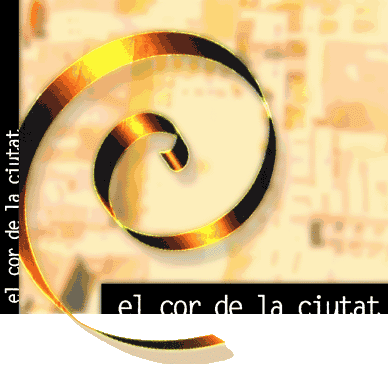

|
  © xagori - WEB STAP | |
La telenovel·la de TV3 que pren com a referència Sant Andreu de Palomar
S'emet de dilluns a divendres en horari de sobretaula (s/ les 15.40)
i els diumenges repetició de tots els Capítols de la setmana a
|
SETMANA
182
|
|
.. MALALTIES
I OPERACIONS La Mari fa que el Toni torni a casa, però demana opinió mèdica a la Carme, que corrobora el diagnnòstic. Desesperada, la noia es presenta al despatx del Marcel, capficat en els problemes d'una restructuració del programa. Veu venir que la feina de la Mar com a vident perilla i li sap greu. Però així i tot, atén amb afecte la Mari i promet que mirarà de parlar amb un metge molt important ex amic del seu pare. Però el Toni, de qui tornarem a parlar més avall per no embolicar ara massa la troca, no en vol saber res, de metges. Vol viure la vida, fer de tiet i no deixar-se destrossar el cos amb pastilles ni perdre el poc temps que li queda visitant consultes mèdiques. Finalment,
és el Marcel qui l'acava mig convencent, però a canvi, el
Toni li fa prometre dues coses: que cuidarà per sempre la
Mari i la Desi i que no digui a ningú que ja té preparat
el final abans que arribi per ell mateix i el deixi mort en vida. La K s'ha de sotmetre a la darrera revisió de la seva història sobre el tema de la cama. L'Ernest li aconsella que s'operi perquè, tot i que sempre li quedarà una lleugera coixesa, el fet de no ajustar les dues cames li repercutirà, a la llarga, en els malucs i l'esquena. La K voldria consultar-ho amb el Manu, però el noi, que segueix fent un stage musical, no diu ni ase ni bèstia a ningú, ni tan sols a la Paula de qui, per cert, només sabem que la cuida la K.
A la Carme, aquesta amistat no li fa cap gràcia per al·lusions, i les dues germanes tenen una primera discussió que recorda, encara que de lluny, les de la primera temporada de la sèrie.
Quan
la dona deixa anar un versicle, el toni és conscient que ha arribat
el moment d'atacar… I inicien un conat de focs artificials interromputs
pel mosso d'esquadra company del Ramon, que fa baixar la
Isabeleta del cotxe. Però
el Toni és sistemàticament estalonat pel policia que, a falta
d'una altra distracció, dedica les hores de la jornada extralaboral
a seguir el Toni. |
Desesperat,
l'Ivan demana ajuda a la Pepita i la Teresa,
que tenen la mà trencada (aquest cop en sentit figurat) de cuinar. El
Pere fa de mitjancer amb els proveïdors milanesos i aconsegueix
col·locar de nou els vestits de la Marta i l'Àngels. L'única possibilitat és demanar el capital al Narcís. La Montse protesta però l'aprenent de fuster els hi deixa sense reserves. Amb els diners a la seva disposició, l'Ivan fa l'oferta al David, que just acaba de rebre una comanda per tot l'any, per la qual cosa respon que, a aquest pas, serà ell qui li comprarà la seva part a l'Ivan… I
aquest, rabiós, decideix atacar per dos fronts diferents: d'una
banda, demana al Pere que torni a fer de mitjancer i, de
l'altra, decideix fer la punyeta tant com pugui, boicotejant el
que calgui.
DE SOLITUDS,
RECONCILIACIONS I INCOMUNICACIÓ La
K segueix capficada amb el tema de l'operació i la Mar
veu perillar la seva feina a la tele… Després, la Mar i l'Àlex s'enrotllen tot imaginant el Gus, una per enyorament, i l'altre per admiració i per la cosa de fer un polvet, que vulguis o no, també fa festa…
L'Iris
demana perdó a la Pilar, li assegura que ja no li interessen
els diners i que els deixarà en pau per sempre perquè està clar
que pare i fill són morts l'un per l'altre. Però
el Ramon ja no sap què fer amb la Pilar, de tan moixa
que està. Així que decideix agafar el toro per les banyes i també
va a veure el Santiago.
LA
DEFLAGRACIÓ El
David es troba amb el Pere, i ladvocat intenta convèncer
el noi perquè vengui, tot acompanyant-lo. El cuiner gairebé ni se
l'escolta, però permet que l'home el segueixi camí del Sibarita. La
Marta i l'Ivan es troben a la porta del càtering i
esperen que arribi el David per fer el relleu. Aquest arriba
amb el Pere, que segueix mirant de convèncer-lo… L'impacte catapulta els dos homes a terra i una fumera immensa i tòxica ho inunda tot. L'Ivan, desesperat, corre a mirar d'ajudar els caiguts, però el fum i l'esforç el maregen i es desmaia. La Marta crida desesperada. El fum és cada cop més agressiu i de dins d'aquell infern no en surt ningú. Es tapa boca i nas com pot i entra, per descobrir, entre la fumera, els tres homes inconscients: El David i el Pere arran de fogons, l'Ivan, una mica més enfora….
Spock |

Setmana 182
Tornar a Resums febrer 2005
Tornar a Pàgina Resums
 |
 |
Bl@u
El Cor de l'estiu
Channing

L'equip de la WEB STAP ©
tplana, Spock, Channing, Casablanca, Baulena
procurem fer resums per tal que els andreuencs, i la resta de catalans (en el sentit més ampli) coneguem quina imatge es dóna de nosaltres.